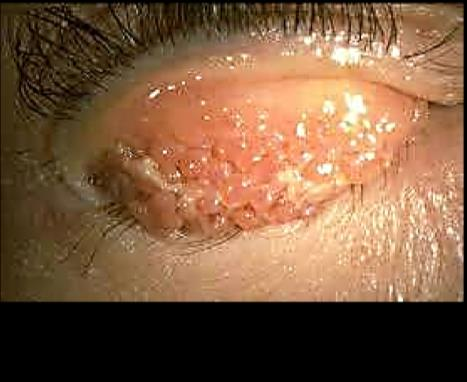

| Items of difference | Papillae of spring catarrh | Papillae of Trachoma |
|---|
| 1. Etiology | Allergic | Chlamydia trachomatis |
| 2. Symptoms | Itching | Heaviness of lids |
| 3. Season | Summer | Not seasonal |
| 4. Sex | Males | Equal |
| 5. Size | Large (cobble stone) | Fine |
| 6. Top | Flat topped | Rounded tops |
| 7. Color | Bluish white | Red |
| 8. Upper fornix | Always free | Affected |
| 9. Discharge | Ropy rich in eosinophils | No eosinophils |
| 10. Inclusion bodies | Absent | Present |
Table 5

Everted upper tarsal conjunctiva showing papillae